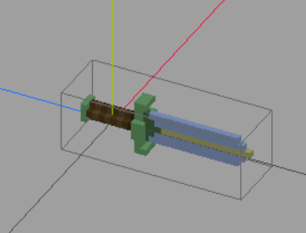
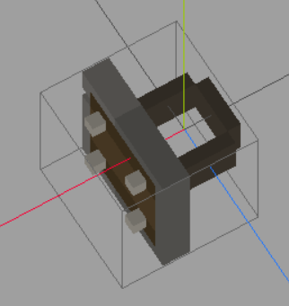
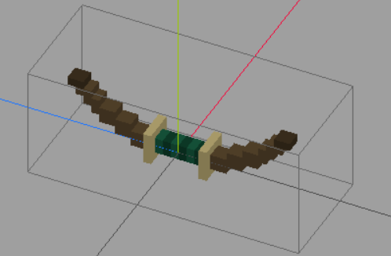
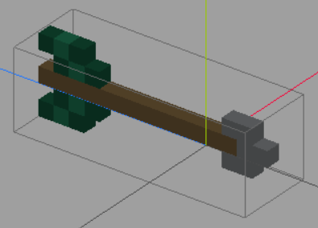

Creating weapons
Examples of weapons can be found inside stonehearth/entities/weapons.
Same steps than for adding gear and armor, with some minor differences.
We'll start by copying
stonehearth/entities/weapons/short_swordto our mod.We rename the files and folders, let's call it magic_sword, for example. Notice that there are 2 models, one is for the iconic/default version, and the other one will be shown when the weapon is equipped.
Notice its orientation and position. The point where the hearthlings will grab it should be at (0,0,0) on your modeling program, no matter the model size. The orientation will make it face forward in the game, so that hearthlings will swing it in the correct direction: 
The JSON file for the iconic doesn't have anything special. The other JSON file will have the usual properties for the net worth and catalog entries in "entity_data".
The weapon will only have a default model variant, which is the 'equipped' QB model.
It doesn't have a ghost JSON file in the entity_forms component, like the armor pieces, because it's not meant to be placeable.
Then, in the "stonehearth:equipment_piece" component, we have the same properties than for armor. Notice the values for the following properties:
- "slot": "mainhand"
- "render_type": "attach_to_bone"
This means that the sword will be equipped in the "mainhand" slot. The "mainhand" slot is mapped to the "mainHand" bone of the hearthlings skeleton in
stonehearth/data/constants.json. And "attach_to_bone" means that the sword will be attached to that bone, as opposed to merging with it.-
"postures": [] "stonehearth:combat", "stonehearth:patrol" ]This array contains postures defined in the postures files, take a look at
stonehearth/data/rigs/entities/humans/postures.jsonfor examples (postures will be explained in the animation guide - TBD).If we include this array, it means that the weapon will only be visible when the hearthling plays the animations defined for those postures, so that they don't stab themselves with it while playing the eat, sleep, etc. animations.
Now, in the "entity_data", we have the following extra entries:
"stonehearth:combat:weapon_data" (as opposed to "stonehearth:combat:armor_data"):
"stonehearth:combat:weapon_data": { "base_damage": 16, "reach": 1.5 }The "base_damage" will be shown in the Equipment tab of the character sheet (if the item has a render type), just like the defense is for armor items.
The "reach" is expressed in world units, so this sword can reach an enemy that is 1.5 blocks away from our hearthling (the hearthling will start attacking as soon as he/she's within that reach of the enemy).
"stonehearth:combat:melee_attacks" :
"stonehearth:combat:melee_attacks": [ { "name": "combat_1h_backhand", "effect": "combat_1h_backhand", "active_frame": 17, "cooldown": 0, "priority": 0 }, { "name": "combat_1h_forehand", "effect": "combat_1h_forehand", "active_frame": 16, "cooldown": 0, "priority": 0 } ]This is an array of objects. Each entry corresponds to a melee attack. We'll briefly cover the basic properties here:
- "name" is an identifier.
- "effect" is the name of the effect's JSON file that contains the animation to be played. Notice that it's only the name, it doesn't end by ".json" nor includes the full path to the effect file.
Effects for hearthlings are inside
stonehearth/data/rigs/entities/humans/effects.- "active_frame" is the frame from the animation at which we consider that the sword will hit the enemy (the game plays some sparks VFX at that moment).
- "cooldown" is milliseconds to wait before attacking.
- "priority" will make some attacks more frequent than other ones.
These attacks will be used in combat when this weapon is equipped. They will cause the damage defined in the "base_damage" field from "stonehearth:combat:weapon_data", modified by any buffs etc. But there are some extra properties we can add to them, which will be explained in depth in the guide for creating custom combat jobs - TBD.
You can browse different weapons to find them out in the meantime.
We add an alias to our manifest:
"aliases": { "weapons:magic_sword" : "file(entities/weapons/magic_sword)" }Test your new weapon in the game:

You can spawn enemies by triggering the ambient threats encounters in the campaign browser debug tool.
Two-handed weapons
To implement a two-handed weapon, we have this extra field inside the "stonehearth:equipment_piece" component:
"additional_equipment": {
"stonehearth:armor:offhand_placeholder": true
}
This piece of equipment can be found inside stonehearth/entities/armor. It has very few properties:
{
"type": "entity",
"components": {
"stonehearth:equipment_piece": {
"slot": "leftArm",
"ilevel": -1,
"destroy_on_drop": true
}
},
"entity_data": {}
}
It's just an entity that can be equipped (no "render_type" because we want it to be invisible).
Notice the negative "ilevel". Only items with positive "ilevel" can be upgraded. So this means the hearthling won't try to equip shields while wearing our two-handed sword, because the "leftArm" slot will be occupied by this invisible additional equipment.
He/she will still be able to upgrade the main weapon.
Two-handed weapons usually have a higher reach in "stonehearth:combat:weapon_data".
Make sure that any "additional_equipment" you add has a negative ilevel and "destroy_on_drop" : true, so that it gets destroyed when the hearthling is demoted or rescued (otherwise, they will just drop it, and a new one would be created when they recover and re-equip the weapon, which means the invisible item will stay somewhere in the map cluttering your game).
Shields
Shields are implemented like any other armor or weapon. Normally they're worn only on certain postures, like the weapons, but they have armor_data, because they're defensive items.
So inside their "entity_data" we can find the base_damage_reduction, which will always be applied when fighting:
"stonehearth:combat:armor_data": {
"base_damage_reduction": 1
}
and a "stonehearth:combat:melee_defenses" array (as opposed to the "stonehearth:combat:melee_attacks"):
"stonehearth:combat:melee_defenses": [
{
"name": "simple_shield_block",
"effect": "combat_1h_shield_block",
"active_frame": 4,
"cooldown": 10000,
"priority": 0,
"chance_of_success": 0.1
}
]
Notice the "chance_of_success" property here. This is a percentage that will be used to calculate the chances to run this defense, which will block the enemy attack on that turn.
The "chance_of_success" property is exclusive for melee defenses.
Remember to position the shield model over the (0,0,0) coordinates in your modeling program: 
Ranged weapons
To implement a ranged weapon, copy stonehearth/weapons/bow to your mod (ignore the bow_talisman.json file, it's used for the archer because this bow is their default weapon).
For the most part, it's like the other weapons. Rename the files and edit them. Mind the position and orientation of the QB model for the equipped version: 
In the equipment piece component, you may notice this field:
"no_drop": trueThis is used for default weapons or armor of the combat classes, which have no "roles" field either.
When combat units get incapacitated, they will drop their current equipment, so in order to keep their default clothes and weapon (which can't be obtained in the game, nor can be automatically equipped) we use this "no_drop" property.
Some of the enemy weapons also have this property set to true, since we equip their weapons manually from Lua.
Now let's check the "entity_data" of bow.json:
"stonehearth:combat:weapon_data" contains more properties than for the melee weapons:
"stonehearth:combat:weapon_data": { "base_damage": 25, "base_ranged_damage": 25, "range": 30, "projectile_speed": 30, "projectile_uri": "stonehearth:weapons:arrow", "projectile_start_offset": { "x": -0.2, "y": 1.5, "z": -1 }, "projectile_end_offset": { "x": 0, "y": 1.5, "z": 0 } }We have both "base_damage" and "base_ranged_damage". Ranged attacks will have preference so "base_ranged_damage" will be used.
In "range" we have a high value, the archers will start attacking when in that number of blocks between them and the target.
"projectile_speed" is how many blocks per real time seconds does it take to reach the target.
"projectile_uri" by default will be "stonehearth:weapons:arrow", but we can create our own projectile.
"projectile_start_offset" and "projectile_end_offset" are optional offsets if we need to spawn the projectile in a specific location so that it fits with the animation.
We can find the projectiles inside
stonehearth/entities/weapons. For example, the default arrow looks like this:{ "type": "entity", "components": { "model_variants": { "default": { "models": [ "file(arrow.qb)" ] } }, "mob": { "model_origin": { "x": -0.05, "y": 0, "z": 0.05 } }, "stonehearth:projectile": {} }, "entity_data": { "stonehearth:catalog": { "display_name": "i18n(stonehearth:entities.weapons.arrow.display_name)", "description": "i18n(stonehearth:entities.weapons.arrow.description)" } } }It's an entity with very few properties. Notice the "stonehearth:projectile" : {} component. We can create our own projectiles this way.
The arrow.qb model is positioned over (0,0,0), with the tip of the arrow overflowing, which will be the part that will get sunk into the enemy before the arrow disappears: 
"stonehearth:combat:ranged_attacks" (as opposed to "stonehearth:combat:melee_attacks"):
"stonehearth:combat:ranged_attacks": [ { "name": "archer_1h_shoot", "effect": "archer_1h_shoot", "active_frame": 41, "cooldown": 0, "priority": 0 } ]Same properties than for the melee attacks, but will be used by the combat service as ranged attacks.
"stonehearth:combat:idle:ready" :
"stonehearth:combat:idle:ready": { "name": "archer_1h_idle" }With this we can change the idle animation that plays when they're fighting but not attacking. This field can only be used in main weapons.